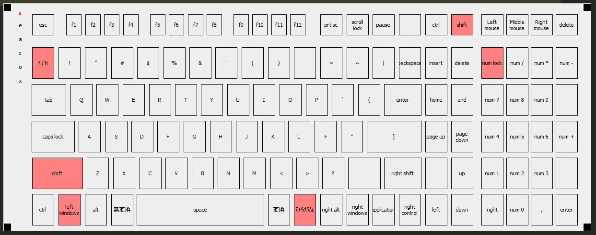

急にVSCode内のマルチカーソルに対応するショートカットコマンド Ctrl + Alt + [Arrow] が使えなくなった．
多用するショートカットで非常に困るので，状況判断と対策を行った．
Ctrl + Alt + [Arrow] を押しても無反応
インテルグラフィックスコマンドセンターというアプリ．
ショートカットホットキーとして，Ctrl + Alt が割り振られている事によるバグであると思われる．
ショートカットホットキーの設定をオフにしても効果がなかった．
タスクマネージャーとkbvというアプリを用いて行った．
kbv実行画像
VSCode内設定の Ctrl + K Ctrl + S でキーボードショートカットを開き，設定を変更しようとしたところ，キーボード入力として認識されていないように感じた．
そこで，kbv(仮想キーボードを表示するアプリ)を用いて Ctrl + Alt + [Arrow] が認識されているかを判断したところ，入力として認識されていなかった．
レジストリにゴミが入ったことを疑い，まずレジストリの復元を試した．
幸運にも昔取ったバックアップがあり，復元してみたが，効果はなかった．
次にkbvで逐一確認しながら，タスクマネージャーを使って裏で動いているアプリを1つずつ落としていった．
インテルグラフィックスコマンドセンターというアプリを落としたところ，キーボードの不具合がなくなった．
そもそもインテルグラフィックスコマンドセンターを使う必要性がなかった為，アプリのアンインストールを行った．
アプリ内の設定を変更するだけの対策は不可能であった．(2020/09/01)
あくまで推測に留まるが，恐らくインテルアプリのホットキー設定をoffにすることで， Ctrl + Alt + [Arrow] の動作をキャンセルしている．
その結果，副作用としてあたかもキー入力自体が無効化されているように見えているものと思われる．
今回この症状が出てネット検索をするも，具体的な解決策が見つからなかったためここに記す．